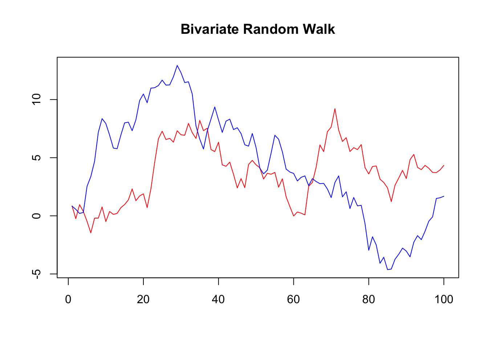

Forecasting Inflation and Interest Rate in Australia
Abstract. This paper forecasts Australian inflation and interest rate using Bayesian Vector Regressive Model with stochastic volatility and a multivariate-t distributed error, with the purpose of allowing time varying volatility and capturing sudden increases in volatility during extreme period such as the COVID-19 pandemic. It is an application of such method, which is often considered as a significant improvement over a standard BVAR, to Australian macroeconomic variables to generate spot and density forecasts using post-COVID data.
Keywords. BVARs, Stochastic Volatility, t-distributed error, inflation, interest rate, Australian economy
Introduction
Objective: This paper aims to forecast Australian short term interest rate and inflation. It follows the method in Hartwig(2022), using a BVAR-SV model with its error covariance matrix being multivariate-t distribution.
Question: Can the model suggested produce reliable spot and density forecast for Australian inflation and interest rate?
Motivation: Volatility variation across time in macroeconomic variables is widely explored in literature (Bloom,2014), which the standard Gaussian error modeling may fail to capture and then leads to unreliable results. Hartwig(2022) suggests that several BVAR models with modified volatility distribution which differentiate from the standard Gaussian perform better under likelihood measurement. The best fitting one with post-COVID19 data is BVAR-t-SV. The stochastic process captures the time persistence of volatility, which is evident in variables such as short term interest rate(Ball and Torous,1999). A multivariate-t distributed error, with relatively fatter tails, can recognize some extreme volatility as temporary spikes instead of persistent effect. The forecast focus on inflation and interest rate due to their strong relevance to policy making and people’s daily lives. Many challenges arise post-COVID for government to facilitate the revitalization of the economy, where forecast plays its roles. This research contributes to the existing literature by applying the forecasting method tested to fit the post-COVID data in other countries in Australian economy to facilitate better predictions.
Data
All data is obtained from the RBA. Daily or monthly data is converted to quarterly format by averaging. Following Chan(2020), other than cash rate and unemployment, variables will be transformed using log difference times 400 in BVAR as a form of growth. These are some standard variables to include in a macroeconomics forecast:
Cash rate: the cash rate target in percent (series_id:FIRMMCRTD)
Money aggregate(M1): the seasonal adjusted M1 aggregate in $billion (series_id:DMAM1S)
Money aggregate(M3): the seasonal adjusted M3 aggregate in $billion (series_id:DMAM3S)
Consumer Price Index Consumer Price Index (series_id:GCPIAG)
Real GDP: Gross Domestic Product in real terms in $million (series_id:GGDPCVGDP)
Unemployment: Unemployment rate in percent (series_id:GLFSUPSA)
The data window covers 1990 Q1 to 2023 Q4, as the most up-to-date post-COVID data in Australia, similar to Hartwig(2022). Cash rate, real GDP and unemployment rate are very standard variables to include while doing forecast with inflation as the cyclical variables(eg.Stock and Watson(1999)). Money aggregate as a supply side driver for commodity price, are included as well(eg. Dhakal et al(1994)).
Time Series Plot
The following are the time series plot of raw CPI, real GDP, M1 and M3 monetary aggregate, unemployment rate and cash rate on quarterly basis. Note the former 4 variables all display a clear growth trend. Unemployment and cash rate are generally decreasing with fluctuations.
The log level of CPI, real GDP, M1 and M3 aggregate were plotted here.

ACF and PACF
The following ACF plots of all transformed variables show autocorrelation over a large number of lags, therefore, likely to be non-stationary.

In PACF plots, significant correlations were only observed in the first lag for variables except for unemployment rate. It demonstrates partial autocorrelation for the first and second lag, also in some lags order 15 to 20.

Augmented Dickey-Fuller
The table shows the result of Augmented Dickey-Fuller test. All time series are non-stationary except for cash rate in this test.
| variable | p_value | non_stationary |
|---|---|---|
| cpi_log | 0.1161 | 1 |
| gdp_log | 0.8695 | 1 |
| m1_log | 0.1178 | 1 |
| m3_log | 0.7529 | 1 |
| cr | 0.0107 | 0 |
| un_em | 0.3928 | 1 |
The first difference ADF test only indicates non-stationarity for log m3 money supply.
| variable | p_value | non_stationary |
|---|---|---|
| cpi_log | 0.0180 | 0 |
| gdp_log | 0.0100 | 0 |
| m1_log | 0.0219 | 0 |
| m3_log | 0.1614 | 1 |
| cr | 0.0177 | 0 |
| un_em | 0.0100 | 0 |
All variables are integrated of order 2.
| variable | p_value | non_stationary |
|---|---|---|
| cpi_log | 0.01 | 0 |
| gdp_log | 0.01 | 0 |
| m1_log | 0.01 | 0 |
| m3_log | 0.01 | 0 |
| cr | 0.01 | 0 |
| un_em | 0.01 | 0 |
#Model
Here presents the Bayesian VAR in the general form of a VAR(p):
\[y_t = a_0 +A_1y_{t-1}+...+A_py_{t-p}+ \epsilon_t \]
where
- \(y_t\) is a \(n \times 1\) vector
- \(n\) is the number of variables
- \(a_0\) is the \(n \times 1\) intercept vector
- \(A_p\) is \(n \times n\) coefficient matrix for each lag order \(p\).
In compact matrix notation:
\[Y = XA+E\] where
- \(Y_{T \times n}=(y_1', y_2',...,y_T')'\)
- \(X_{T \times K}=(x_1', x_2',...,x_T')'\)
- \(x_{i K \times 1}=(1, y_{t-1}',...,y_{t-p}')'\) for i = 1,…T.
- \(A_{K \times n}=(a_0', A_1',...,A_p')'\) is a compact coefficient matrix
- \(E_{T \times n}=(\epsilon_1', \epsilon_2',...,\epsilon_T')'\).
- \(K = 1+pn\).
In standard form, the error term is normally distributed \[\epsilon_t \sim iidN(0, \Sigma)\] or \[vec(E) \sim N(0, \Sigma \otimes I_T)\]
- \(\Sigma\) is a \(n \times n\) covariance matrix
- \(I_T\) is an \(T \times T\) identity matrix.
To allow for non-Gaussian error, we can relax the assumption for the identity matrix and substitute it for \(\Omega\):
\[vec(E) \sim N(0,\Sigma \otimes \Omega)\]
The specifications of \(\Omega\) and their meaning will be discussed in the next session.
Estimation Procedure
The Baseline Model
The baseline model is the standard form where \(\Omega\) = \(I_T\). With predictive density:
\[Y|X,A,\Sigma \sim MN_{T \times N} (XA, \Sigma, I_T)\] Therefore the likelihood function: \[L(A,\Sigma|Y,X) \propto det(\Sigma)^{-\frac{T}{2}}exp(-\frac{1}{2}tr[\Sigma^{-1}(Y-XA)'(Y-XA)])\] The matrix-variate normal and inverse Wishart natural conjugate priors for \(A\) and \(\Sigma\):
\[p(A,\Sigma) = p(A|\Sigma)p(\Sigma)\] \[A|\Sigma = MN_{K\times N}(\underline{A},\Sigma,\underline{V})\] \[\Sigma \sim IW_N(\underline{S},\underline{\nu})\] Derive the product of the likelihood function and the density function \(p(A,\Sigma)\), collect corresponding terms and then we have the full conditional posterior distribution:
\[A|\Sigma = MN_{K\times N}(\bar{A},\Sigma,\bar{V})\] \[\Sigma \sim IW_N(\bar{S},\bar{\nu})\] where the parameters are:
\[\bar{V} = (X'X + \underline{V}^{-1})^{-1}\]
\[\bar{A} = \bar{V}(X'Y + \underline{V}^{-1}\underline{A})\] \[\bar{S} = \underline{S}+Y'Y + \underline{A}'\underline{V}^{-1}\underline{A}-\bar{A}'\bar{V}^{-1}\bar{A}\] \[\bar{\nu}= T + \underline{\nu}\] To accommodate non-stationary data, we use minnesota prior:
\[\underline{A} = [0_{N\times1} \space\space I_N \space\space 0_{N \times (p-1N) }]'\] \[\underline{V} = diag([\kappa_{2} \space \space \kappa_{1} (p^{-2} \otimes i_{N}')])\]
The following contains code for the estimation and a results demonstration with a bivariate Gaussian random walk data, with true parameter \(A = [0_{2 \times 1} \space I_2]\) and \(\Sigma = I_2\).

The following function represents the estimation procedure:
#Function form of basic model
bvar_est = function(Y,X){
#set parameters
t = nrow(Y)
N = 2 #number of variables
S = 50000 #number of draws
#mle
A.hat = solve(t(X)%*%X)%*%t(X)%*%Y
Sigma.hat = t(Y-X%*%A.hat)%*%(Y-X%*%A.hat)/t
# minnesota prior
k1 = 0.02^2
k2 = 100
A.prior = matrix(0,nrow(A.hat),ncol(A.hat))
A.prior[2:(1+N),] = diag(N)
V.prior = diag(c(k2,k1*((1:p)^(-2))%x%rep(1,N)))
S.prior = diag(diag(Sigma.hat))
nu.prior = N+1
# NIW posterior
V.bar.inv = t(X)%*%X + diag(1/diag(V.prior))
V.bar = solve(V.bar.inv)
A.bar = V.bar%*%(t(X)%*%Y + diag(1/diag(V.prior))%*%A.prior)
nu.bar = nrow(Y) + nu.prior
S.bar = S.prior + t(Y)%*%Y + t(A.prior)%*%diag(1/diag(V.prior))%*%A.prior - t(A.bar)%*%V.bar.inv%*%A.bar
S.bar.inv = solve(S.bar)
#draws from posterior
Sigma.posterior = rWishart(S, df=nu.bar, Sigma=S.bar.inv)
Sigma.posterior = apply(Sigma.posterior,3,solve)
Sigma.posterior = array(Sigma.posterior,c(N,N,S))
A.posterior = array(rnorm(prod(c(dim(A.bar),S))),c(dim(A.bar),S))
L = t(chol(V.bar))
for (s in 1:S){
A.posterior[,,s]= A.bar + L%*%A.posterior[,,s]%*%chol(Sigma.posterior[,,s])
}
round(apply(A.posterior,1:2,mean),3)
# report posterior means and sd of parameters
A.E = apply(A.posterior,1:2,mean)
Sigma.E = apply(Sigma.posterior,1:2,mean)
output = list(
A.E = A.E,
Sigma.E = Sigma.E
)
return(output)
}
# A posterior mean
round(bvar_est(Y,X)$A.E,2) [,1] [,2]
[1,] 0.07 0.12
[2,] 0.98 -0.02
[3,] 0.01 0.99# Sigma posterior mean
round(bvar_est(Y,X)$Sigma.E,2) [,1] [,2]
[1,] 0.96 0.20
[2,] 0.20 0.98The printed results above are for \(A\) and \(\Sigma\),which is fairly close to the true value.
The Extended Model - Student-t Distributed Error
The model is where \(\Omega\) = \(diag(\lambda_1, \lambda_2,...,\lambda_T)\). Each lambda independently drawn from an Inverse Gamma 2 distribution \(IG2(\nu,\nu)\). The predictive density:
\[Y|X,A,\Sigma \sim MN_{T \times N} (XA, \Sigma, \Omega)\] Therefore the likelihood function:
\[L(A,\Sigma,\Omega|Y,X) \propto det(\Omega)^{-\frac{N}{2}}det(\Sigma)^{-\frac{T}{2}}exp(-\frac{1}{2}tr[\Sigma^{-1}(Y-XA)'\Omega^{-1}(Y-XA)])\]
I assume the same matrix-variate normal and inverse Wishart natural conjugate priors for \(A\) and \(\Sigma\). Derive the product of the likelihood function and the density function \(p(A,\Sigma)\), collect corresponding terms and then we have the full conditional posterior distribution:
\[A|\Sigma = MN_{K\times N}(\bar{A},\Sigma,\bar{V})\] \[\Sigma \sim IW_N(\bar{S},\bar{\nu})\] where the parameters are:
\[\bar{V} = (X'\Omega^{-1}X + \underline{V}^{-1})^{-1}\]
\[\bar{A} = \bar{V}(X'\Omega^{-1}Y + \underline{V}^{-1}\underline{A})\] \[\bar{S} = \underline{S}+Y'\Omega^{-1}Y + \underline{A}'\underline{V}^{-1}\underline{A}-\bar{A}'\bar{V}^{-1}\bar{A}\] \[\bar{\nu}= T + \underline{\nu}\] To derive the full conditional posterior for \(\lambda_t\), the kernel of likelihood function can be expressed as:
\[L(A,\Sigma,\Omega|Y,X) \propto det(\Omega)^{-\frac{N}{2}}exp(-\frac{1}{2}tr[\Sigma^{-1}(Y-XA)'\Omega^{-1}(Y-XA)])\] \[= (\prod^{T}_{i = 1} \lambda_t^{-\frac{N}{2}})exp({-\frac{1}{2}}{\frac{1}{\lambda_t}} \sum^{T}_{i =1}\epsilon_t' \Sigma^{-1}\epsilon_t)\] That is for each \(t\), the likelihood function is:
\[ \lambda_t^{-\frac{N}{2}}exp({-\frac{1}{2}}{\frac{1}{\lambda_t}} \epsilon_t' \Sigma^{-1}\epsilon_t)\] The density function for \(\lambda_t \sim IG2(\nu,\nu)\) is:
\[\lambda_t^{-\frac{\nu_{\lambda}+2}{2}}exp({-\frac{1}{2}}{\frac{\nu_{\lambda}}{\lambda_t}})\] The posterior density for \(\lambda_t\) is:
\[p(\lambda_t|Y,X,A,\Sigma,\nu_{\lambda})= \lambda_t^{-\frac{N+\nu_{\lambda}+2}{2}}exp[{-\frac{1}{2}}{\frac{1}{\lambda_t}}(\nu_{\lambda}+\epsilon_t' \Sigma^{-1}\epsilon_t))]\] Which is: \[\lambda_t|Y,X,A,\Sigma,\nu_{\lambda} \sim IG2(\bar\nu_{\lambda},\bar{s}_{\lambda})\] \[\bar\nu_{\lambda} = N+\underline\nu_{\lambda}\] \[\bar{s}_{\lambda} =\underline\nu_{\lambda}+\epsilon_t' \Sigma^{-1}\epsilon_t\] Here, we need a gibb sampler to estimate each parameter. I initialize a \(\Omega^{(0)}\), which is a diagonal matrix with each element \(\lambda_t\) drawn from \(IG2(\bar\nu_{\lambda},\bar\nu_{\lambda})\) and let \(\bar\nu_{\lambda}=5\).Then:
Draw \(\Sigma^{(s)}\) from \(IW_N(\bar{S},\bar{\nu})\).
Draw \(A^{(s)}\) from \(MN_{K\times N}(\bar{A},\Sigma^{(s)},\bar{V})\).
Then for each iteration \(s\), I draw \(T\) \(\lambda_t\) using corresponding row in the error matrix:
- Draw \(\lambda_t^{(s)}\) from \(IG2(\bar\nu_{\lambda},\bar{s}_{\lambda})\).
Then form \(\Omega^{(s)}\) with \(\lambda_t^{(s)}\), update all the priors, repeat.
The following function represents the estimation procedure:
library(MCMCpack)
bvar_t = function(Y,X){
# Set parameters
S = 1000
N = 2
t <- nrow(Y)
p = 1
#mle
A.hat = solve(t(X)%*%X)%*%t(X)%*%Y
Sigma.hat = t(Y-X%*%A.hat)%*%(Y-X%*%A.hat)/t
#minnesota
k1 = 0.02^2
k2 = 100
A.prior <- matrix(0,nrow(A.hat),ncol(A.hat))
A.prior[2:(1+N),] = diag(N)
V.prior = diag(c(k2,k1*((1:p)^(-2))%x%rep(1,N)))
Sigma.s.prior = diag(diag(Sigma.hat))
Sigma.v.prior = N+1
lambda.nu.prior = 5
#inital lambda/omega
lambda0 = rinvgamma(t, lambda.nu.prior/2, lambda.nu.prior/2)
omega0 = diag(lambda0)
# Initialize arrays to store posterior draws
Sigma.posterior.draws = array(NA, c(N,N,S))
A.posterior.draws = array(NA, c((1+p*N),N,S))
Omega.posterior.draws = array(NA, c(t,t,S+1))
Omega.posterior.draws[,,1] = omega0
lambda.posterior.draws = array(NA,c(t,S))
lambda.s.posterior = array(NA,c(t,S))
# diag(1/(lambda.posterior.draws[,s]))
for (s in 1:S){
Omega.inv.s = solve(Omega.posterior.draws[,,s])
V.posterior = solve(t(X)%*%Omega.inv.s%*%X + solve(V.prior))
A.posterior = V.posterior%*%(t(X)%*%Omega.inv.s%*%Y + solve(V.prior)%*%A.prior)
Sigma.s.posterior = t(Y)%*%Omega.inv.s%*%Y + t(A.prior)%*%solve(V.prior)%*%A.prior + Sigma.s.prior - t(A.posterior)%*%solve(V.posterior)%*%A.posterior
Sigma.v.posterior = nrow(Y) + Sigma.v.prior
Sigma.posterior.draws[,,s] = rWishart(1, Sigma.v.posterior, solve(Sigma.s.posterior))[,,1]
Sigma.posterior.draws[,,s] = solve(Sigma.posterior.draws[,,s])
A.posterior.draws[,,s] = matrix(mvtnorm::rmvnorm(1, mean=as.vector(A.posterior), sigma=Sigma.posterior.draws[,,s]%x%V.posterior), ncol=N)
E.s = Y-X%*%A.posterior.draws[,,s]
for (x in 1:t){
lambda.s.posterior[,s] = lambda.nu.prior + t((E.s)[x,])%*%Sigma.posterior.draws[,,s]%*%(E.s)[x,]
}
lambda.v.posterior = N + lambda.nu.prior
for (x in 1:t){
lambda.posterior.draws[x,s] = rinvgamma(1,lambda.v.posterior/2, lambda.s.posterior[x,s]/2)
}
Omega.posterior.draws[,,s+1] = diag(lambda.posterior.draws[,s])
}
output = list(
A.posterior.draws = A.posterior.draws,
Sigma.posterior.draws = Sigma.posterior.draws,
lambda.posterior.draws = lambda.posterior.draws
)
return(output)
}
# A posterior mean
round(apply(bvar_t(Y,X)$A.posterior.draws[,,1:1000], 1:2, mean),2) [,1] [,2]
[1,] 0.09 0.14
[2,] 0.98 -0.02
[3,] 0.01 0.99# Lambda posterior mean
round(mean(bvar_t(Y,X)$lambda.posterior.draws[,1:1000]),2)[1] 1.05# Sigma posterior meanThe printed results are from the same random walk data. The estimated \(A\) is fairly close to the true value. However, the \(\Sigma\) deviates for a decent amount.This is a problematic feature of this specific model.